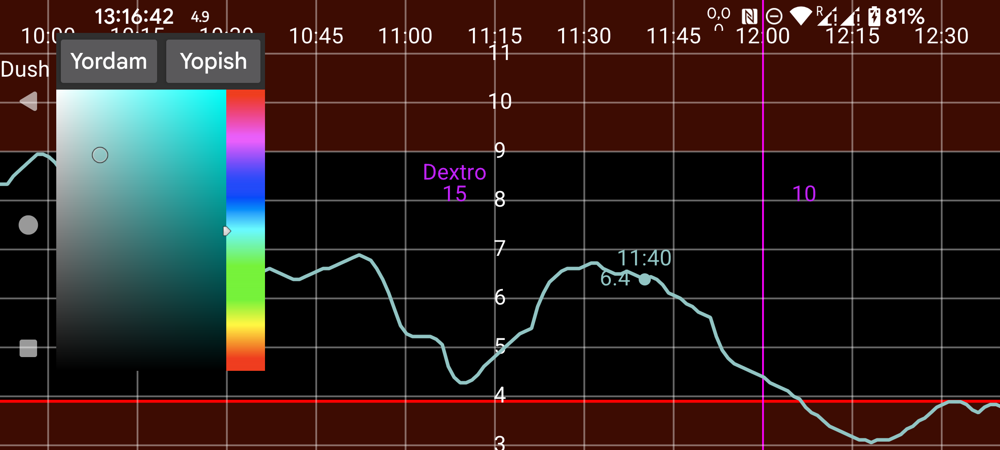

ar be de es fr hi it nl pl pt ru sv tr uk uz zh en
Bu yerda raqamlar, egri chiziqlar va skan nuqtalarining ranglarini o'zgartirishingiz mumkin. Egri chiziq, skan yoki miqdorning bir nuqtasiga teging (shu nuqta yoki miqdor haqidagi ma'lumot ko'rsatilishi uchun). Shundan so'ng ranglar oynasidagi rangga teging. Egri chiziq, skan nuqtasi yoki miqdor endi shu rangda ko'rsatiladi.
WearOS versiyasida orqaga qaytish tugmasi bo'lgan soat kerak; orqaga svayp qilish ishlamaydi.